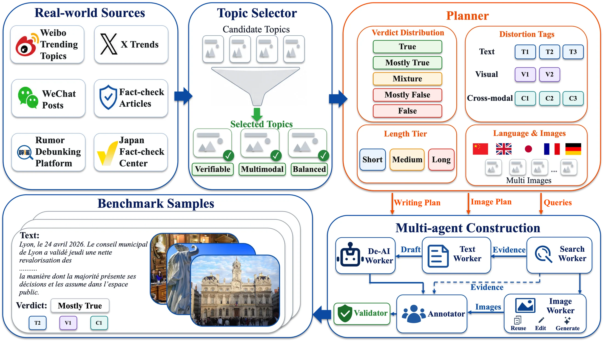
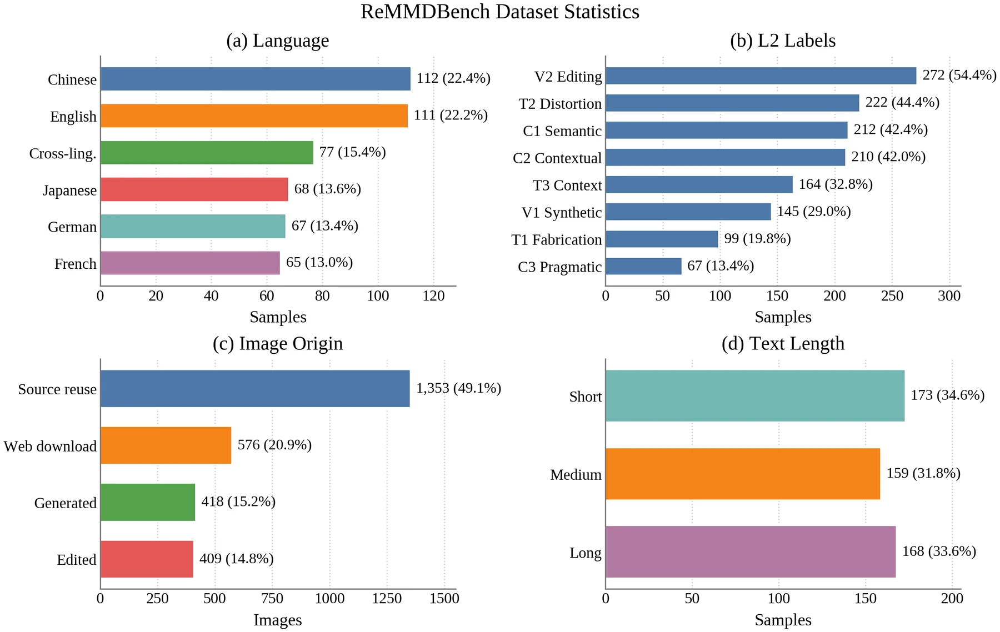
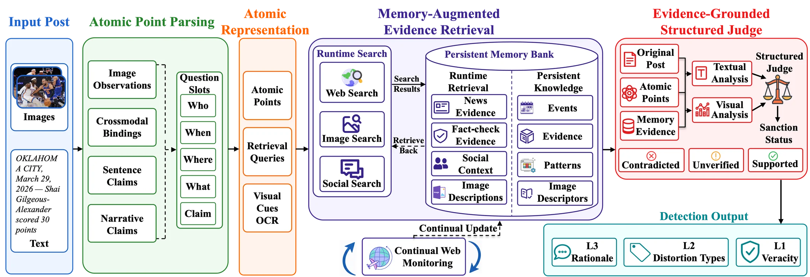
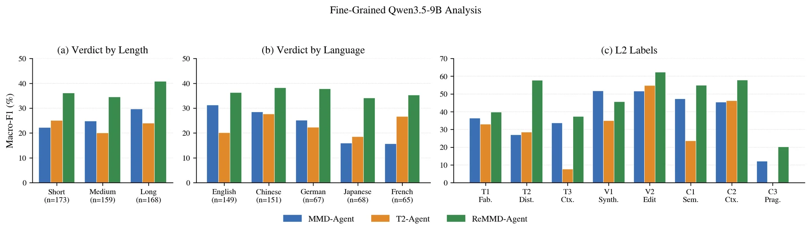

Five monolingual languages plus cross-lingual transfer
English, Chinese, German, Japanese, and French samples expose regional evidence access, entity anchoring, and cross-script variation.
Realistic multimodal misinformation detection
ReMMD pairs ReMMDBench, a multilingual multi-image benchmark with graded veracity and distortion labels, with ReMMD-Agent, a persistent-memory verifier for evidence-centered multimodal misinformation detection.
ReMMDBench
ReMMDBench moves beyond single-image binary detection by combining long multilingual narratives, carousel-style image sets, mixed provenance, five-way veracity, eight distortion labels, and audited rationales.
English, Chinese, German, Japanese, and French samples expose regional evidence access, entity anchoring, and cross-script variation.
Each verifier must decide which images matter, which are persuasive context, and which introduce visual or cross-modal distortion.
The task asks systems to calibrate partial truth, diagnose the mechanism of distortion, and justify the decision.


ReMMD-Agent
ReMMD-Agent decomposes posts into atomic claims, observations, and image bindings, retrieves multimodal evidence, reuses a memory bank, and predicts structured L1/L2/L3 outputs from an explicit evidence state.

Leaderboard
On the full 500-sample split, ReMMD-Agent with GPT-5.2 achieves the best five-way veracity performance, while ReMMD-Agent with Qwen3.5-9B gives the strongest L2 macro-F1 among comparable open-backbone runs.
| System | Backbone | L1 Acc. | L1 Macro-F1 | L2 Macro-F1 | L2 Exact |
|---|---|---|---|---|---|
| Manus | proprietary | 30.00 | 28.35 | 40.06 | 2.20 |
| ChatGPT | proprietary | 30.20 | 28.24 | 43.63 | 3.00 |
| MMD-Agent | GPT-5.2 | 26.40 | 23.42 | 41.98 | 2.00 |
| T2-Agent | GPT-5.2 | 28.20 | 26.00 | 42.68 | 2.60 |
| ReMMD-Agent | GPT-5.2 | 41.80 | 39.12 | 45.15 | 5.00 |
| ReMMD-Agent | Qwen3.5-9B | 37.20 | 37.18 | 46.97 | 10.00 |

Sample gallery
The gallery uses one short, one medium, and one long sample from each language. Cards keep long text compact, while each sample opens into a full text and multi-image viewer.
Citation
@article{dang2026remmd,
title = {ReMMD: Realistic Multilingual Multi-Image Agentic Verification for Multimodal Misinformation Detection},
author = {Dang, Chenhao and Zhu, Dantong and Yang, Jun and He, Conghui and Li, Weijia},
year = {2026}
}